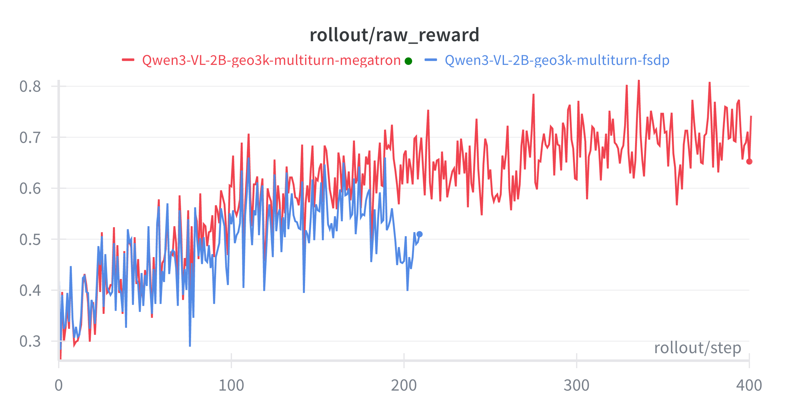
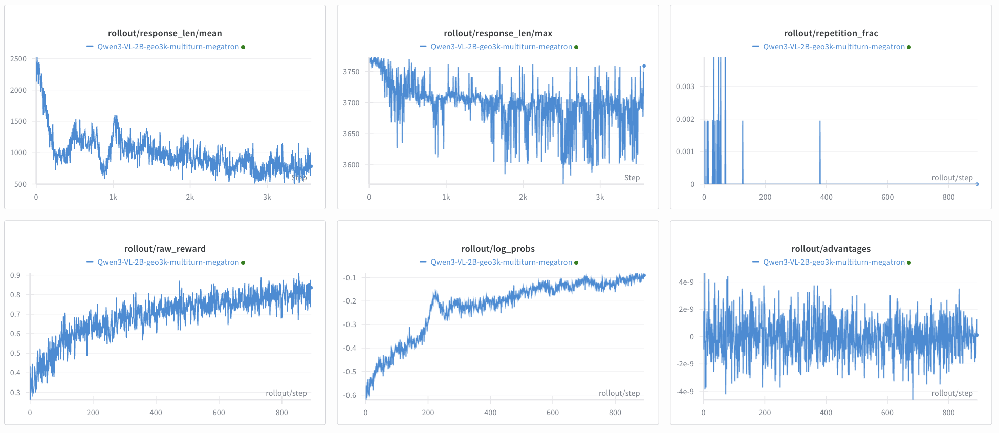

VLM Multi-Turn (geo3k dataset)#
Training VLM on geo3k dataset with multi-turn reasoning with interactive environment feedback, using GRPO. For the dataset, we used the processed version.
Note: Please make sure the cudnn version in the environment is 9.16.0.29 to prevent severe performance regression in conv3d in torch 2.9 mentioned in pytorch/pytorch#168167. Otherwise, you can reinstall cudnn with:
pip install nvidia-cudnn-cu12==9.16.0.29
The multi-turn rollout is implemented through a custom generate function, overriding the original generate function.
In terms of the environment interaction, this example initializes a custom interactive environment with the APIs below.
Environment API (geo3k)
build_env(sample: Sample | None = None, args: Any | None = None, **_) -> Geo3kEnv: constructs the env.reset() -> tuple[dict, dict]: clears internal state.step(response_text: str) -> tuple[dict, bool, dict]: parses the actor's response text and update the state. Return new observation, a flag that marks whether the task is done, and step_info.format_observation(observation: dict) -> dict: converts an env observation into a chat message.
The reward model is the default math RM.


Reproduce#
# 1) Set environment variable
export WANDB_API_KEY=...
export SLIME_SCRIPT_NUM_GPUS=8
# 2) Download the dataset
hf download --repo-type dataset VeraIsHere/geo3k_imgurl_processed --local-dir /root/datasets/geo3k_imgurl_processed
# 3) Run the script:
cd /root/slime
python examples/geo3k_vlm_multi_turn/run_geo3k_vlm_multi_turn.py
What each file does#
examples/geo3k_vlm_multi_turn/run_geo3k_vlm_multi_turn.py: downloads Qwen3.5-35B-A3B, sets training/rollout args, and launches the run.examples/geo3k_vlm_multi_turn/geo3k_vlm_multi_turn_config.yaml: specifiesmax_turnsandrollout_interaction_env_pathfor the multi-turn rollout.examples/geo3k_vlm_multi_turn/rollout.py: custom multi-turn rollout that calls SGLang for token generation, builds loss masks/log_probs, enforces max_turns, and early-stops on max_new_tokens.examples/geo3k_vlm_multi_turn/env_geo3k.py: geo3k tool-calling env that parses <tool_call>{...}</tool_call>, scores math answers, and returns tool feedback per turn.